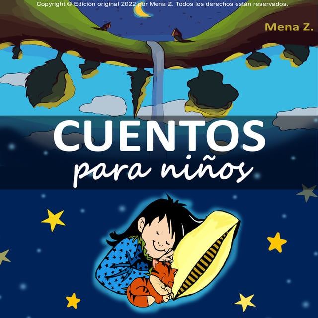
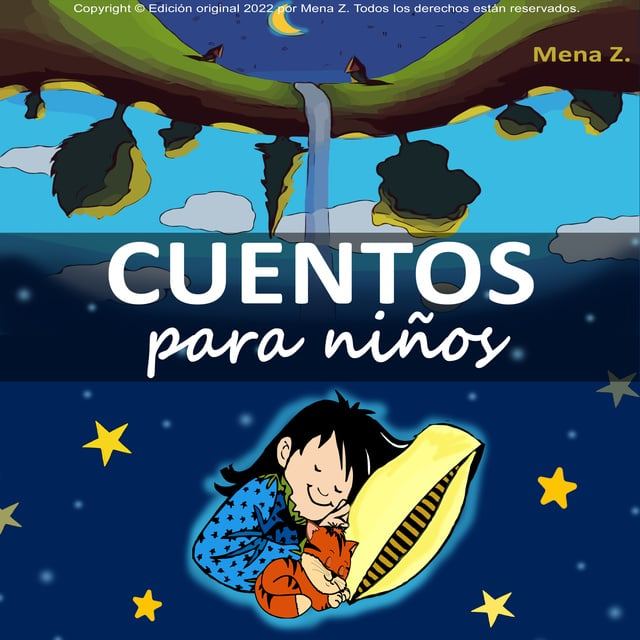

CUENTOS PARA NIÑOS DE 0 A 3 AÑOS
Los cuentos diseñados para niños de 0 a 3 años se centran en estimular los sentidos y crear una conexión emocional con los más pequeños
Los cuentos diseñados para niños de 0 a 3 años se centran en estimular los sentidos y crear una conexión emocional con los más pequeños

Esta es una canción infantil clásica que involucra a los niños en una actividad divertida y educativa. La canción presenta a los miembros de la familia (dedos) y fomenta la coordinación motora al animar a los niños a mover sus dedos mientras cantan.
Una versión adaptada del clásico cuento que destaca la belleza interior y enseña a los niños sobre la aceptación. Con ilustraciones vibrantes, esta historia captura la atención de los más pequeños.